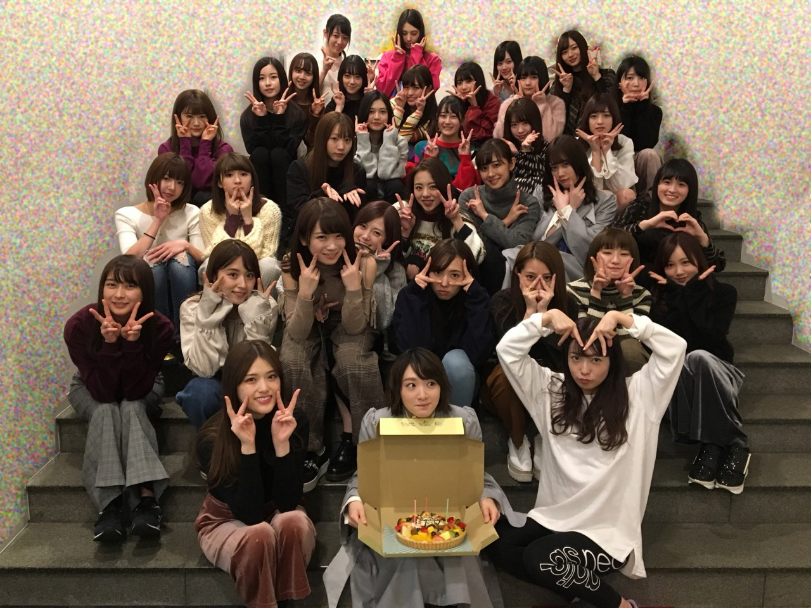
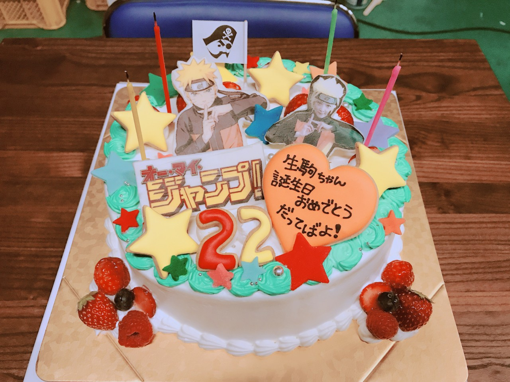
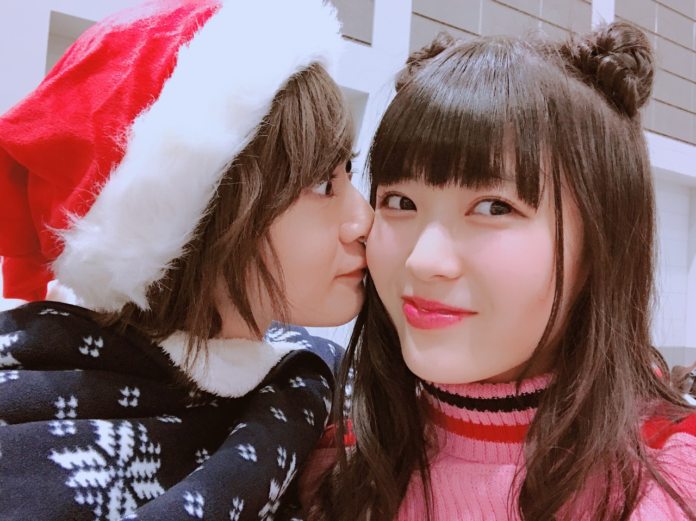
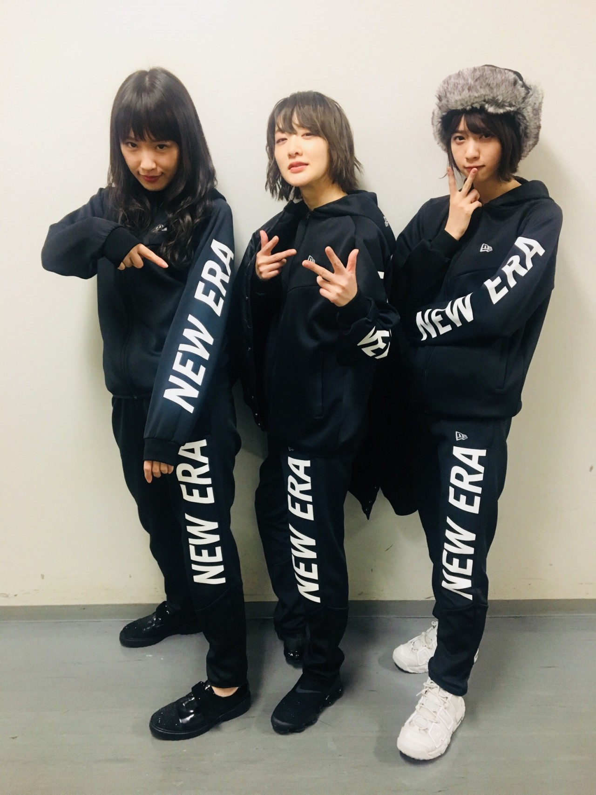
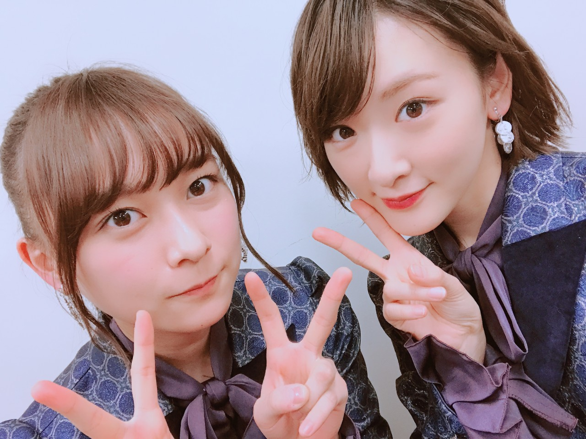

| 2017/12 31 Sun | 生駒里奈 最近のマイブーム.....切れること |
いこまです(*´꒳`*)
まずは、12月29日に22歳になりました〜！！

お祝いしてくれてありがとう(*´꒳`*)
楽しい22歳を迎えました！
いくちゃんの雑コラに愛を感じたよ☆
他にもオリラジ兄さん達、梨花お姉ちゃんのジャンポリチーム
ドラマオーマイジャンプチーム
最高なケーキもろた！

ナルトにもお祝いしてもらった〜(*´꒳`*)
そしてお友達達(*´꒳`*)
沢山の人におめでとうを貰いました(*´꒳`*)
幸せだよ生駒は(*´꒳`*)
ファンの皆さんもコメントありがとう！！

れんたんのお手紙も大切な宝物です(*´꒳`*)♡

生駒里奈誕生日限定結成
生駒軍団
将軍＝生駒
生駒から見て右の右大臣＝かずみん
生駒から見て左の左大臣＝なぁさん
ただ単に、前にお仕事でお世話になった方からお揃いでジャージもらったから着よう(*´꒳`*)
ってノリだけです。
また結成するのは私の23歳のお誕生日ですな笑
そして、まさかの昨日行われた
第59回輝く！日本レコード大賞で、
まさかの大賞を受賞いたしました！！

あやねちゃんと一緒にインフル踊れたのが1番嬉しかった(*´꒳`*)！！♡
どんな賞も名誉もあまり私は興味ない人だったのですが、
賞を取りたい
ではなく、
みんなでブレない自信を持ってパフォーマンス出来たのが認めてもらえたのだと
それが嬉しかった。
私はね(*´꒳`*)
みんな泣いてて可愛かった♡
今年は表現するを沢山考えられた年でした。
今年私に関わって下さった皆さんが先生です。
教えてくださりありがとうございました！
かけがえのない宝物も見つけてしまいました。
本能でまた絶対ここにこいと自分が自分に言ってます。
だから私はそこに必ずまた行きます。
来年は、
私は生き残りたい。
生き残りたいって一番難しい。
だからこそ挑戦したい。
泥だらけに、傷だらけになって、高い壁を何回もぶち壊したい！！
私は、それが自分らしいと思うから。
安定して出せる技術も身につけなければならないですけどね。
2017年
私を応援して下さり本当にありがとうございました。
また、来年も応援して下さると嬉しいです。
ではっ
へばなっ★彡